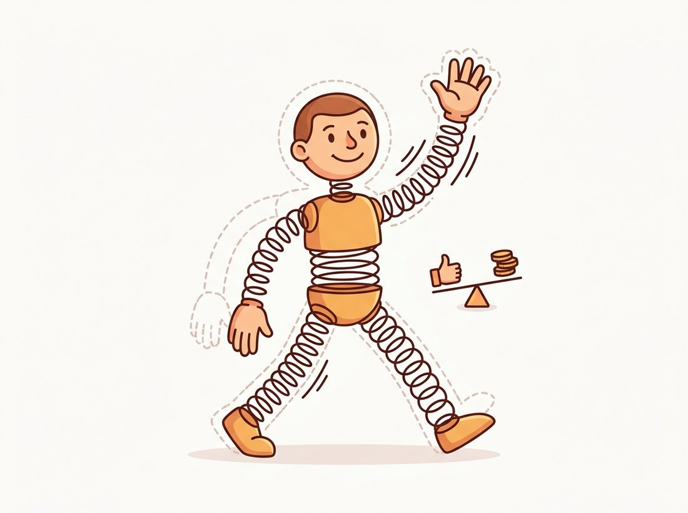

"A person is a head, two arms, two legs, and a torso, held together by springs that complain when you stand wrong. I score the parts, I pay the spring tax, and I add it all up. That is the whole job."
A Deformable Part Model, Holding Itself Together
An object is not a rigid template; it is a constellation of parts that move relative to each other within limits, and modeling those limits explicitly is the high-water mark of hand-crafted recognition. The deformable part model represents an object as a coarse root filter plus several higher-resolution part filters, each free to shift away from its ideal position at a cost, a spring. The score of a placement is the sum of how well every filter matches minus the total spring stretch. This single idea handles articulated and within-class variation that defeated the rigid HOG template of Section 16.3, it won the PASCAL VOC detection challenge for years, and its inference, training, and eventual rewriting as a convolutional network are the cleanest possible bridge to Part III. The illustration below makes the spring metaphor concrete: every part is free to wander, but each is charged a spring tax for the stretch.

Section 16.4 chased speed; this section returns to the expressiveness frontier and pushes it as far as hand-crafted recognition ever reached. The HOG+SVM detector of Section 16.3 treats an object as one rigid block of gradient orientations. That works for pedestrians standing upright but fails the moment a person sits, a horse turns, or a bicycle is photographed from a new angle, because the parts shift relative to one another and a single rigid template cannot follow them. This section presents the model that solved this, deformable part models (DPM), the culmination of the hand-crafted era. It builds on the HOG features of the previous section and on the distance transform of Section 6.5, which there measured each pixel's distance to the nearest object boundary and here returns in a generalized form to fold the spring cost into the part search. The spring metaphor itself is old: it traces back to a 1973 paper by Fischler and Elschlager that the chapter's bibliography cites.
1. Objects as Parts on Springs Intermediate
A DPM has two kinds of filter, both computed in HOG feature space. A single root filter captures the whole object at a coarse resolution, essentially the Section 16.3 template. Several part filters capture sub-regions (a head, a wheel, a leg) at twice the root's resolution, so they see finer detail. Each part has an anchor, its ideal position relative to the root, and a quadratic deformation cost that penalizes displacement away from that anchor, the spring. The model is willing to let a part move to where the image evidence is strongest, but it pays for the move, and the more it deviates from the anatomically expected position, the more it pays. Figure 16.5.1 shows the structure for a person model: the root box, the part boxes at their anchors, and the springs that tie each part to its anchor.
2. The Scoring Function Advanced
Here is where the spring metaphor becomes one equation you can actually compute, and it is simpler than the moving-parts picture suggests: every term is either a match you already know how to score or a penalty for stretching a spring. The score of placing the model at root position $p_0$ with parts at positions $p_1, \ldots, p_n$ is filter matches minus deformation costs:
$$ \text{score} \;=\; \underbrace{F_0 \cdot \phi(p_0)}_{\text{root match}} \;+\; \sum_{i=1}^{n} \underbrace{F_i \cdot \phi(p_i)}_{\text{part } i \text{ match}} \;-\; \sum_{i=1}^{n} \underbrace{d_i \cdot \big( dx_i^2,\, dx_i,\, dy_i^2,\, dy_i \big)}_{\text{deformation cost of part } i}, $$
where $F_i \cdot \phi(p_i)$ is the dot product of part filter $F_i$ with the HOG features $\phi$ at position $p_i$ (a correlation, exactly the Section 16.3 score), and $(dx_i, dy_i)$ is the displacement of part $i$ from its anchor. The deformation term is just a dot product too: the learned coefficient vector $d_i$ against the four displacement features $(dx_i^2, dx_i, dy_i^2, dy_i)$, so a single learned weight scales each of the two squared and two raw displacement terms. The quadratic terms $dx_i^2, dy_i^2$ make the cost grow faster the farther the part strays, and the linear terms let the spring's rest position differ from the raw anchor. A detection is a root position whose best-over-part-placements score clears a threshold. The structure is a star: every part connects to the root and to no other part, which is exactly what makes inference tractable in the next subsection.
The DPM score is a tug-of-war you have seen before. The match terms pull each part toward wherever the image evidence is strongest; the spring terms pull each part back toward its anatomically expected anchor. The chosen placement balances the two, exactly the data-term-versus-smoothness-term structure of the Horn-Schunck optical flow energy in Chapter 15 and the graph-cut segmentation energies of Chapter 11. Across all of classical vision the same template recurs: trust the data, but regularize toward a prior, and tune how hard each pulls. DPM's spring coefficients are that tuning, learned from data rather than set by hand, which is what made it a learning method and not just a model.
The tug-of-war becomes intuition the moment you control it yourself. In the Section 2 score, the quadratic deformation weights (the coefficients on $dx^2$ and $dy^2$) set how stiff each part's spring is. Take the scoring code, fix everything else, and sweep that stiffness across roughly three orders of magnitude, from near zero to very large. Watch where the parts land at the best-scoring placement. As the stiffness grows toward very large, each part is pinned to its anchor and the model collapses back into the single rigid template of Section 16.3; as it shrinks toward zero, every part drifts freely to its own strongest match and a scrambled, anatomically impossible pose can outscore a real one. The useful regime is the middle, and feeling how narrow it is, is exactly why DPM learns these coefficients from data instead of setting them by hand.
3. Fast Inference With the Distance Transform Advanced
Naively, finding the best placement means, for every root position, searching every part over every possible position, an explosion. The star structure rescues it. Because each part connects only to the root, the best position of part $i$ given a root location can be computed independently of the other parts. For each part we want, at every possible root position, the maximum over part positions of (part match at that position) minus (quadratic spring cost to reach it). That is precisely a generalized distance transform: a single operation that, given the part's match-score map, produces a new map giving the best achievable part-plus-spring score for each anchor location, in time linear in the number of pixels. Felzenszwalb and Huttenlocher's distance transform turns the inner search from quadratic to linear, and it is what made DPM inference fast enough to scan a pyramid. The pseudocode below assembles the score from the root response and the distance-transformed part responses.
# Score a deformable part model at every root position: add the coarse root
# response to each part's response after a generalized distance transform
# folds in the quadratic spring cost, so the part search stays linear-time.
import numpy as np
from scipy.ndimage import distance_transform_edt # stand-in for the generalized DT
def dpm_score(hog_pyramid, root_filter, part_filters, anchors, spring):
"""Score a DPM at every root position using distance-transformed parts."""
# Root response: correlate the root filter with coarse-level HOG features.
root_resp = correlate_hog(hog_pyramid["coarse"], root_filter)
total = root_resp.copy()
for F_i, anchor, d_i in zip(part_filters, anchors, spring):
# Part response at the fine level (twice root resolution).
part_resp = correlate_hog(hog_pyramid["fine"], F_i)
# Generalized distance transform: best part score minus quadratic
# spring cost, evaluated for every anchor location, in O(pixels).
dt = generalized_distance_transform(part_resp, d_i)
# Shift the transformed part map to the part's anchor and add it in.
total += shift_to_anchor(dt, anchor)
return total # one score per root position; threshold and run NMS
scores = dpm_score(hog_pyr, root, parts, anchors, springs)
print(f"peak DPM score: {scores.max():.3f}")
# peak DPM score: 1.27The result map has one score per root placement; thresholding it and running the non-maximum suppression of Section 16.3 yields the final detections. Crucially, when a part lands away from its anchor, the recovered displacement tells you something semantic: a high-scoring detection whose leg parts spread wide is a walking person, whose arm part rose is a waving one. DPM does not just detect; it recovers a coarse pose for free, a property the bibliography's "DPMs are CNNs" paper later exploits.
4. Training With Latent Positions Advanced
Training a DPM faces a chicken-and-egg problem. The labels say only "there is a person in this box"; they do not say where the head part or the leg parts are. The part positions are latent: unknown during training, to be inferred. The fix is the latent SVM, which alternates two steps in the spirit of expectation-maximization (the standard recipe for fitting a model with hidden variables: guess the hidden values, refit the model, repeat, the same alternating loop that drives the k-means vocabulary of Section 16.2). First, with the filters fixed, infer the best part placement for each positive example (the latent step, using the Section 3 inference). Second, with those placements fixed, the problem becomes an ordinary SVM over the now-complete feature vectors, so update the root filter, part filters, and spring coefficients by maximum-margin training. Iterate.
Wrapped around that alternating loop is one more familiar step. Hard negative mining (Section 16.3 again) runs throughout, mining false positives from negative images and adding them to the training set, because detection's background-imbalance problem does not go away.
A single root filter still cannot cover a car seen from the front and the same car seen from the side; the gradient patterns are too different. DPM handles this with mixture components: several root-plus-parts models per object class, each specializing in a viewpoint or aspect (frontal car, side car, three-quarter car), with the detector taking the max over components. The component assignment is itself latent, inferred during training. With mixtures, latent parts, and hard negatives, the full DPM was the detector to beat for half a decade.
Who & situation: an agricultural-monitoring company needed to count and locate cattle in aerial drone imagery of large pastures, around 2013, before deep detectors were practical on their hardware budget. Problem: a rigid HOG template failed badly because cattle appear in every orientation, grazing with heads down, standing, lying, photographed from straight above at varying angles, and one template could not span the range. Decision: they trained a six-component deformable part model, letting the mixture components specialize in head-down versus standing versus lying poses and the part filters absorb the within-pose articulation, with hard negative mining on shadows and rocks that the first model confused for animals. Result: the DPM's pose-specialized components and flexible parts lifted recall on non-standard poses dramatically over the rigid template, and the recovered part displacements even let them flag likely lying or distressed animals for closer inspection. Lesson: mixtures plus deformable parts are exactly the right tool when a category genuinely has multiple appearances and articulation, and the DPM's by-product pose information can be a feature, not just a detection; this is the expressive ceiling the rigid methods could not reach.
5. The Bridge to Convolutional Networks Intermediate
DPM is where hand-crafted recognition got as expressive as it ever would, and it is also where the bridge to deep learning is most visible. In 2015 Girshick and colleagues showed that DPM inference can be rewritten exactly as a convolutional neural network: the filter correlations are convolution layers, the max over part positions is a form of max pooling, and the distance transform is a special pooling layer. A trained DPM is a CNN with a particular, hand-designed architecture. The difference is that the DPM's structure (how many parts, where the anchors sit, the spring form) was designed by humans and only the filter weights were learned, whereas a CNN learns the structure too, from data, with many more layers. Figure 16.5.2 lines up the correspondence stage by stage, the clearest single picture of why deep learning subsumed rather than replaced the classical pipeline.
DPM's central idea, let the model sample features from positions that shift with the content, became a learned operator. Deformable convolutions add learnable per-location offsets to the convolution sampling grid, so a single layer can adapt its receptive field to an object's articulation exactly as DPM's parts adapt to a pose, and the 2024 DCNv4 (Xiong et al., CVPR 2024, arXiv:2401.06197) makes this fast enough for modern backbones. Deformable attention does the same for transformers, letting attention sample a sparse, content-dependent set of locations, which is the mechanism behind Deformable DETR and a building block in the detectors of Chapter 23. Even the parts-and-relations structure persists in compositional and part-aware models for fine-grained recognition. DPM was not a dead end; it was a hand-built prototype of operators that the field then made learnable, the same fate that befell HOG and the cascade.
A from-scratch DPM, mixtures, latent SVM, distance-transform inference, and hard negative mining, is among the most complex programs in classical vision, well over a thousand lines in the original release. OpenCV once shipped a DPM detector in its contrib modules, but the modern, maintained equivalent is simply a learned detector: a few lines with ultralytics give you a YOLO model whose deformable-attention or feature-pyramid backbone subsumes everything DPM did and far more, trained end to end. The thousand-line hand-built pipeline became a model-zoo download.
# DPM's modern successor in three lines: a pretrained YOLO detector that
# learned the part structure, deformation tolerance, and viewpoint mixtures
# DPM encoded by hand, returning boxes, classes, and scores in one call.
from ultralytics import YOLO
model = YOLO("yolo11n.pt") # pretrained detector, learned end to end
results = model("street.jpg") # boxes, classes, scores in one call
# The backbone learns parts, deformation, and viewpoint mixtures implicitly.ultralytics replaces the entire deformable-part pipeline with one call, having learned the part structure, deformation tolerance, and viewpoint mixtures that DPM encoded by hand.The deformable part model won the PASCAL VOC detection challenge or placed at the top for several consecutive years and earned its authors a Longuet-Higgins "test of time" prize. Then, a few years later, two of the same authors (Girshick among them) helped write both R-CNN, which beat DPM with deep features, and the paper proving DPM was a CNN all along. It is one of the rare cases where the people who built the reigning classical method also built its deep replacement and then formally explained why the replacement was the same machine with the structure learned. The torch was not so much passed as carried across the room by the same hands.
DPM connects every part to the root and to no other part (a star graph). Explain why this choice makes inference linear in the number of pixels per part via the distance transform, and what would change computationally if parts were also connected to each other (a general graph). Then give one example of an object whose appearance would be better modeled by part-to-part connections, and one reason the DPM authors accepted the star approximation anyway.
Implement the scoring of a single part given its match-response map: for each anchor location, compute the maximum over all part positions of (match score at that position) minus a quadratic spring cost $d_x \, dx^2 + d_y \, dy^2$. First do it with brute-force nested loops, then with scipy.ndimage's distance-transform machinery. Verify the two agree on a small synthetic response map, and time both as the map grows from $32 \times 32$ to $512 \times 512$ to confirm the linear-versus-quadratic scaling difference.
Using the correspondence in Figure 16.5.2, write a short paragraph for each row arguing precisely why the DPM operation and the CNN layer compute the same thing (for example, why a filter correlation is a convolution up to a sign and stride convention). Then identify the one operation in the table that has no exact CNN counterpart without a custom layer, and explain what a network must add to reproduce it. Conclude with one sentence on what the CNN gains by learning, rather than designing, the part structure.